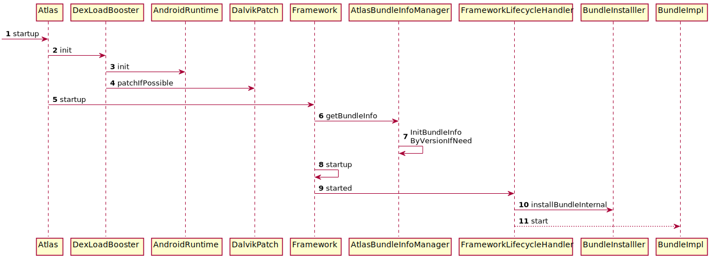

概述
接上篇 Atlasz之启动过程(一) ,继续 6-10 步的启动过程。

6. onCreate
AtlasBridgeApplication.java
@Override
public void onCreate() {
super.onCreate();
Method method = mBridgeApplicationDelegate.getClass().getDeclaredMethod("onCreate");
method.invoke(mBridgeApplicationDelegate);
}
直接反射调用mBridgeApplicationDelegate的onCreate方法.
7. BridgeApplicationDelegate.onCreate
BridgeApplicationDelegate.java
public void onCreate(){
// 7.1 实例application
mRealApplication = (Application) mRawApplication.getBaseContext()
.getClassLoader().loadClass(mRealApplicationName).newInstance();
//7.2 replace xxx
AtlasHacks.ContextImpl_setOuterContext.invoke(
mRawApplication.getBaseContext(), mRealApplication);
//...
//7.3 mRealApplication.attach
AtlasHacks.Application_attach
.invoke(mRealApplication,mRawApplication.getBaseContext());
//7.4 install content providers
Object mBoundApplication = AtlasHacks.ActivityThread_mBoundApplication.get(activityThread);
AtlasHacks.ActivityThread$AppBindData_providers.set(mBoundApplication,mBoundApplication_provider);
AtlasHacks.ActivityThread_installContentProviders.invoke(activityThread,mRealApplication,mBoundApplication_provider);
//7.5. startup
Atlas.getInstance().startup(mRealApplication,mIsUpdated);
//7.6 onCreate
mRealApplication.onCreate();
}
函数有点长，不过内容大概分为6块
- 实例化app工程中指定的mRealApplication
- 替换application
- 反射执行mRealApplication的attach方法
- 加载provider
- Atlas.startup
- 调用mRealApplication.onCreate方法
7.1 实例application
mRealApplication = (Application) mRawApplication.getBaseContext()
.getClassLoader().loadClass(mRealApplicationName).newInstance();
mRealApplicationName实际上是指com.taobao.demo.DemoApplication。在这里，构造出了app工程中指定application的对象实例。
7.2 替换application
//replace baseContext.mOuterContext
AtlasHacks.ContextImpl_setOuterContext.invoke(mRawApplication.getBaseContext(), mRealApplication);
//replace baseContext.mPackageInfo.mApplication
Object mPackageInfo = AtlasHacks.ContextImpl_mPackageInfo.get(mRawApplication.getBaseContext());
//...
7.2部分，为了保证DemoApplication能够像正常声明的application一样正常工作，做了大量的hook。这里不关注具体hook实现，只给出hook后的映射，感兴趣的童鞋可以自行研究。
| 替换点 | 实现类 |
|---|---|
| ContextImpl.mOuterContextt | DemoApplication |
| ContextImp.mPackageInfo | DemoApplication |
| ActivityThread.mInitialApplication | DemoApplication |
| ActivityThread.mAllApplications | DemoApplication |
7.3 Application.attach
AtlasHacks.Application_attach.invoke(mRealApplication,mRawApplication.getBaseContext());
mRealApplication实际上就是DemoApplication,反射执行application的attach方法,即第8步。
7.4 加载provider
Object mBoundApplication = AtlasHacks.ActivityThread_mBoundApplication.get(activityThread);
AtlasHacks.ActivityThread$AppBindData_providers.set(mBoundApplication,mBoundApplication_provider);
AtlasHacks.ActivityThread_installContentProviders.invoke(activityThread,mRealApplication,mBoundApplication_provider);
在Atlas启动过程(上)的2.4小节中，为了防止在主dex中找不到bundle中的class,不得已延迟了对provider的加载。而在第5步中，atlas完成了对classloader等关键地方的hook。由于DelegateClassLoader的存在，此时进行加载provider，是不会出现问题的。
8. DemoApplication.attach
DemoApplication.java
final void attach(Context context) {
attachBaseContext(context);
mLoadedApk = ContextImpl.getImpl(context).mPackageInfo;
}
由7.3可知，mRealApplication实际上就是DemoApplication
- 调用DemoApplication的attachBaseContext方法
- 为DemoApplication创建一个LoadedApk对象
9. startUp

在startup整个函数周期内，做的事情非常之多，重要的是第3、4、6、7和8步。
9.3
public void init(Context context, boolean hookedJavaVM) {
if(VMUtil.IS_VM_ART) {
success = Boolean.valueOf(ARTUtils.init(context, hookedJavaVM));
} else {
success = Boolean.valueOf(DalvikUtils.init());
}
}
看函数名，是针对art和dalvik工具类进行初始化。
//DalvikUtils.java
public static boolean init() {
System.loadLibrary("dalvikhack");
nativeInit();
}
//ARTUtils.java
public static boolean init(Context context, boolean hookedJavaVM) {
System.loadLibrary("dexinterpret");
nativeInit(...);
}
9.4
public static int patchIfPossible() {
System.loadLibrary("dalvikpatch");
if(isDalvik()) {
int ingored = adjustLinearAlloc();
}
return 0;
}
首先加载dalvikpatchso,用途： todo
接着执行 adjustLinearAlloc方法 ，用途 todo
9.7
private synchronized void InitBundleInfoByVersionIfNeed(){
String bundleInfoStr = (String)RuntimeVariables.getFrameworkProperty("bundleInfo");
if(!TextUtils.isEmpty(bundleInfoStr)) {
LinkedHashMap<String,BundleListing.BundleInfo> infos = BundleListingUtil.parseArray(bundleInfoStr);
BundleListing listing = new BundleListing();
listing.setBundles(infos);
mCurrentBundleListing = listing;
}
}
可以看到，函数是从RuntimeVariables读取字符串，之后解析成对象存储。很明显，这个字符串应该是配置之类的信息。在atals从gradle到apk中，我们提到过，atlas会在编译期间会分析bundle和gradle配置，将一些配置写入RuntimeVariables中。
package android.taobao.atlas.framework;
public class FrameworkProperties
{
public static String autoStartBundles;
public static String bundleInfo = "[{\"activities\":[\"com.taobao.firstbundle.FirstBundleActivity\"],\"contentProviders\":[],\"dependency\":[],\"isInternal\":true,\"pkgName\":\"com.taobao.firstbundle\",\"receivers\":[],\"services\":[\"com.taobao.firstbundle.FirstBundleService\"],\"version\":\"1.0.0@unspecified\"},{\"activities\":[\"com.taobao.secondbundle.SecondBundleActivity\",\"com.taobao.secondbundlelibrary.SecondbundleShareActivity\"],\"contentProviders\":[],\"dependency\":[],\"isInternal\":true,\"pkgName\":\"com.taobao.secondbundle\",\"receivers\":[],\"services\":[],\"version\":\"1.0.0@unspecified\"},{\"activities\":[\"com.taobao.remotebunle.RemoteBundleActivity\"],\"contentProviders\":[],\"dependency\":[],\"isInternal\":false,\"pkgName\":\"com.taobao.remotebunle\",\"receivers\":[],\"services\":[],\"version\":\"1.0.0@unspecified\"},{\"activities\":[],\"contentProviders\":[],\"dependency\":[],\"isInternal\":true,\"pkgName\":\"com.taobao.publicBundle\",\"receivers\":[],\"services\":[],\"version\":\"1.0.0@unspecified\"}]";
static
{
autoStartBundles = "com.taobao.firstbundle";
}
}
可以看到，bundleInfo 字段是一堆json字段，解析后格式BundleInfo,保存着bundle的信息。
public static class BundleInfo{
private String pkgName;
private String applicationName；
private List<String> dependency;
private HashMap<String,Boolean> activities;
private HashMap<String,Boolean> services;
private HashMap<String,Boolean> receivers;
private HashMap<String,Boolean> contentProviders;
//...
}
也就是说，在这一步， atlas获得了所有bundle的信息 。
9.8
private void started(){
//读取配置
String autoStartBundle = (String) RuntimeVariables.getFrameworkProperty("autoStartBundles");
String[] bundles = autoStartBundle.split(",");
//异步安装bundle
for (int x = 0; x < bundles.length; x++) {
final String bundleName = bundles[x];
BundleInstaller.startDelayInstall(bundleName, ...);
}
}
简化了大部分代码，只关注核心逻辑。代码读取RuntimeVariables上的字段autoStartBundles,这个值是在gradle中配置的com.taobao.firstbundle，然后开始异步加载firstbundle
bundle的加载过程和加载触发时机请参考 Atlas之bundle加载过程，这里不在讨论。
10. DemoApplication.onCreate
DemoApplication.java
public void onCreate() {
super.onCreate();
//...
}
执行app工程定义的DemoApplication的onCreate方法。
至此，Atlas启动过程的分析完成。